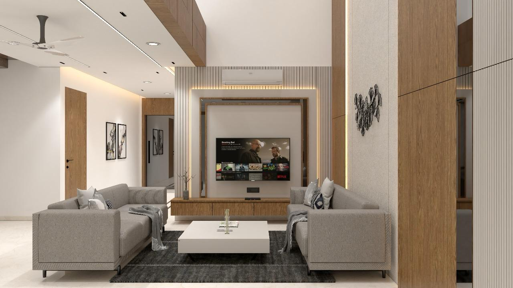
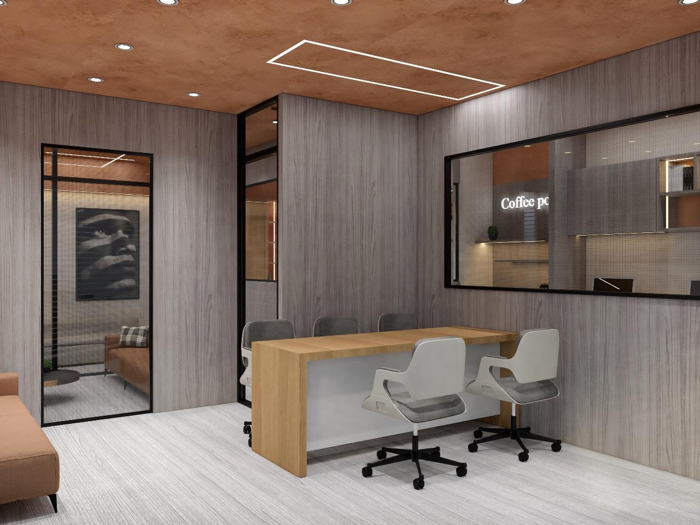

Selected Works




AESTHETIC • MINIMAL • TURKISH VIBE
Bhai, yahan teri details aayengi. Maine layout aisa banaya hai ki text kam bhi ho toh bhi ye premium dikhe. Ye Glassmorphism effect tere content ko background se alag aur futuristic look deta hai.